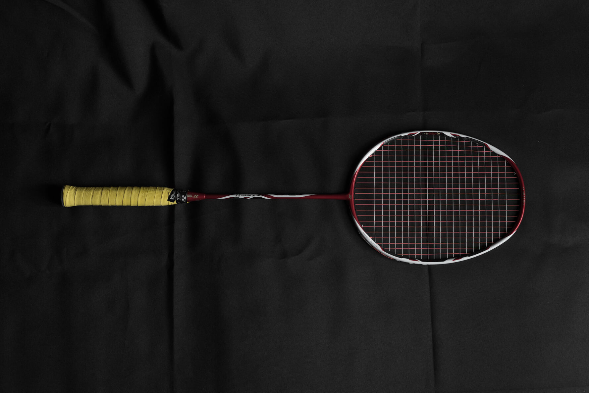

My Yonex Arc Saber 11
After experiencing Duora ZS, I try to find a badmintion racket which is suitable for me.
Because of the love to Taufik Hidayat, I chose the “Yonex ArcSaber 11” as my new equipment finally.

OK , here we go.
I have a Yonex Duora 10 as well, so I will compare ArcSaber with this.
First of all, arc11’s racket head looks the same as Duora 10, but the sweet spot is larger than the other. At the same time, its painting looks too old-fashion. In my opinion, I am not very fond of it.
Second of all, the shaft of Arc11 is cruder than Duora 10 because of the missing of new technology. Meanwhile, it’s as hard as Duora 10. So when you play it with shuttle, you can clearly feel the feedback.
Third of all, I chose the G5 handle on it. After clearing the primer, I grab it with “Yonex AC102C” which is cost-effective and easy-to-use.
Last but not least, the Yonex aerobite is a 5-star line. I super loveing the sound and the muilti-color.
Overall, the Arcsaber 11 is a good racket for me. Though it has no such more new technology like Duora 10, but I can adapt it in just 10 mintues with good experience. It’s a little bit heavy when I play for 60 mintues, so maybe I should strengthen the muscle training.
From my perspective, I can give 8 points.
Update on 6th October
The 24 pounds’ Aerobite is not suitable for me. So I have bought Yonex 66UM for a try.